The first image is the original Eagle.jpg, the rest were generated using the following commands:
./image -input samples/Eagle.jpg -brightness 1.5 -output report/images/bright.png
./image -input samples/Eagle.jpg -contrast 1.5 -output report/images/contrast.png
./image -input samples/Eagle.jpg -saturation 1.5 -output report/images/saturation.png
./image -input samples/Eagle.jpg -extractChannel 2 -output report/images/blue.png
./image -input samples/Eagle.jpg -noise 0.25 -output report/images/noise.png
./image -input samples/Eagle.jpg -crop 120 100 350 215 -output report/images/crop.png
The following images show Eagle.jpg first, and then it quantized and dithered using the random and Floyd Steinberg methods. All are bit depth 2 to demonstrate efficacy. Generated with the following commands:
base.png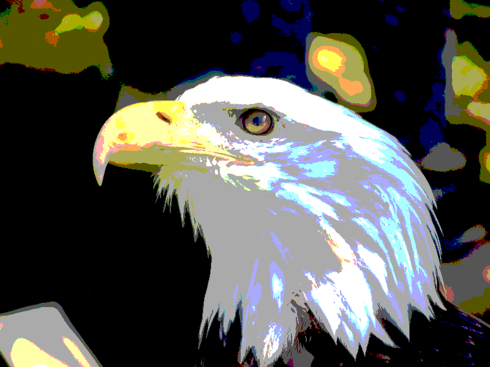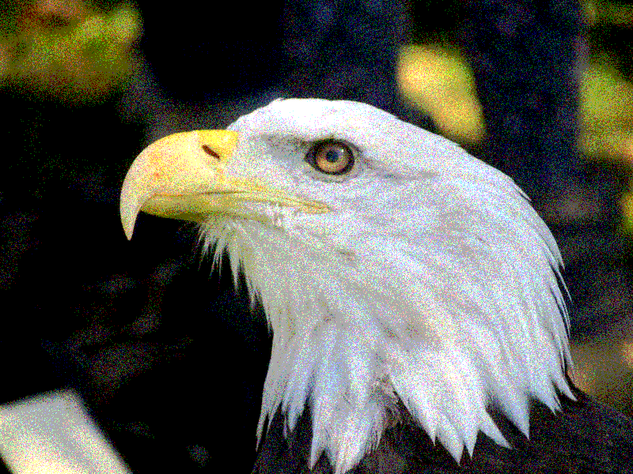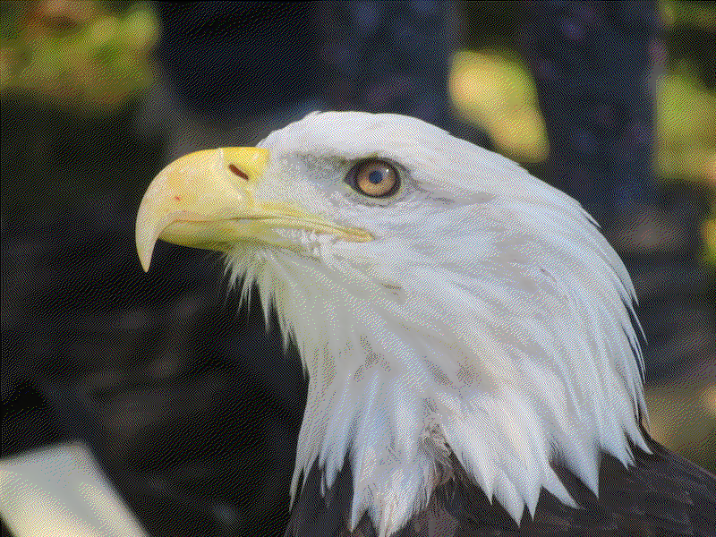
./image -input samples/Eagle.jpg -quantize 2 -output report/images/quant.png
./image -input samples/Eagle.jpg -randomDither 2 -output report/images/dithrand.png
./image -input samples/Eagle.jpg -FloydSteinbergDither 2 -output report/images/floyd.png
The Floyd steinberg image has some slight change in texture with some regular patterns, but clearly has less error. It's almost indistinguishable from the original image at smaller scales.
Blurring takes a Gaussian kernel and convolves it in discrete time over the image. Sharpening extrapolates beyond the interpolation from that blurred image to the original image to produce an "unblurred" version:
base.png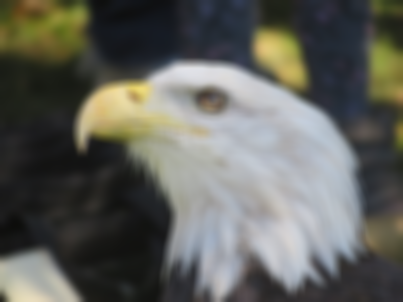
./image -input samples/Eagle.jpg -blur 10 -output report/images/blur.png
./image -input samples/Eagle.jpg -sharpen 10 -output report/images/sharp.png
Edge detection also uses a DT Kernel Convolution. I implemented the Sobel operator, which makes a pass with a vertical edge detection kernel and another with horizontal, then puts the results together.
Image *udi = new Image(*this);
float udf[9] = {-1.0, -2.0, -1.0,
0,0,0,
1.0, 2.0, 1.0
};
udi->DTConvolve(this, udf, 3);
Image *lri = new Image(*this);
float lrf[9] = {-1, 0, 1.0,
-2.0, 0, 2.0,
-1.0, 0, 1.0
};
lri->DTConvolve(this, lrf, 3);
Image generated with:
./image -input samples/Eagle.jpg -edgeDetect -output report/images/edge.png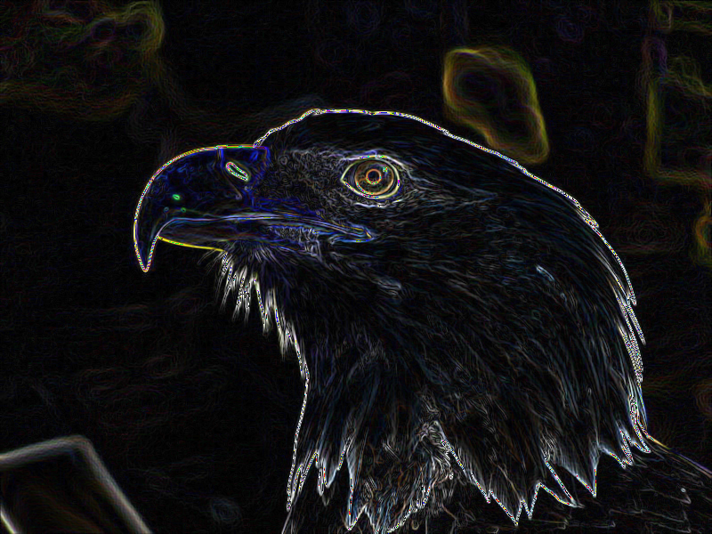
Here are the basic examples of scaling and rotating, but I'll give some more as I go into the sampling methods:
./image -input samples/Eagle.jpg -scale 2 2 -output report/images/upscale.png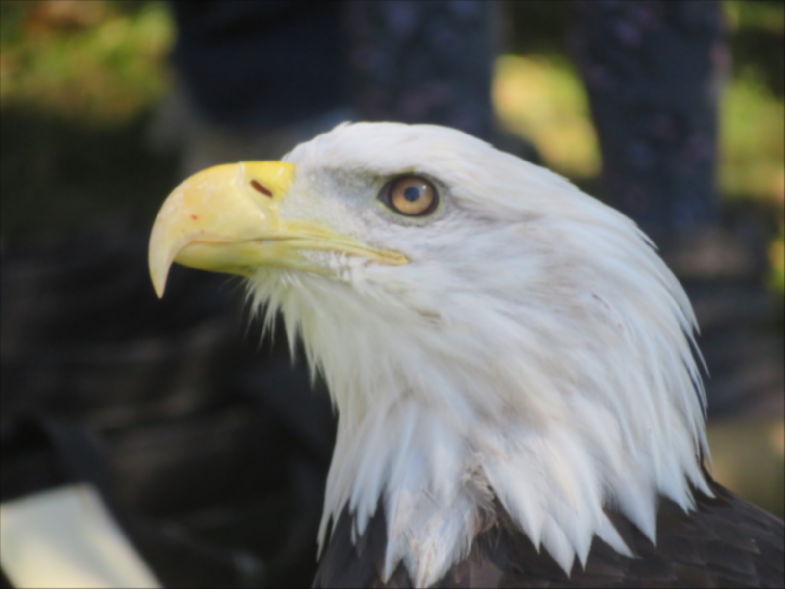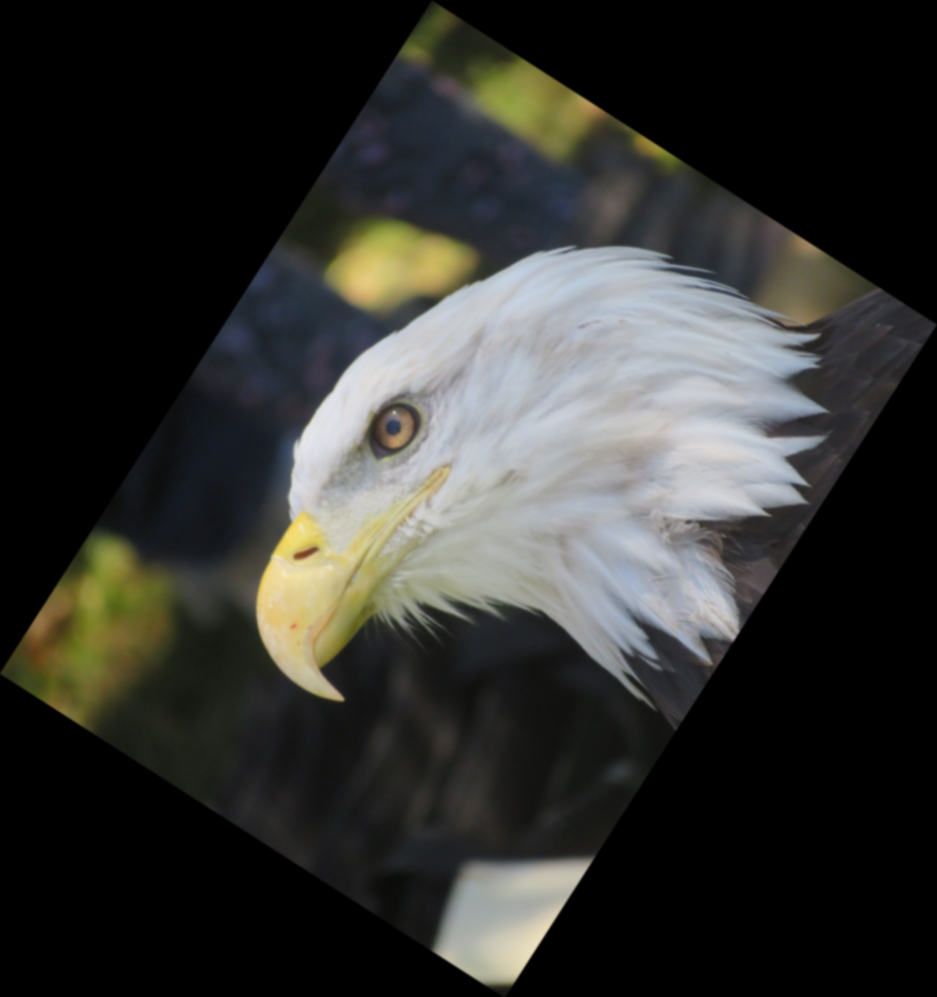
./image -input samples/Eagle.jpg -scale 0.25 0.25 -output report/images/downscale.png
./image -input samples/Eagle.jpg -rotate -1 -output report/images/rot.png
Sampling Methods
I implemented nearest neighbor, bilinear, and gaussian sampling. Here's all three of them used for downsampling:
./image -input samples/Eagle.jpg -crop 220 250 80 80 -sampling 2 -scale 0.25 0.25 -output report/images/nearestdown.png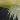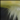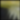
./image -input samples/Eagle.jpg -crop 220 250 80 80 -sampling 1 -scale 0.25 0.25 -output report/images/bildown.png
./image -input samples/Eagle.jpg -crop 220 250 80 80 -sampling 0 -scale 0.25 0.25 -output report/images/gaussdown.png
Then, here each of them are for upsampling:
./image -input samples/Eagle.jpg -crop 220 250 80 80 -sampling 2 -scale 4 4 -output report/images/nearestup.png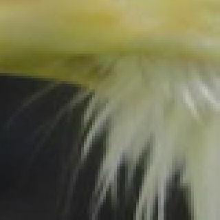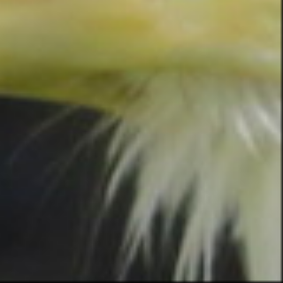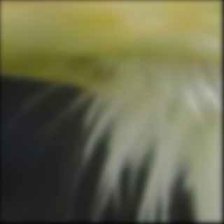
./image -input samples/Eagle.jpg -crop 220 250 80 80 -sampling 1 -scale 4 4 -output report/images/bilup.png
./image -input samples/Eagle.jpg -crop 220 250 80 80 -sampling 0 -scale 4 4 -output report/images/gaussup.png
In both upsampling and downsampling, nearest neighbor produces some pretty bad aliasing in the form of jaggies. Gaussian is very smooth, but because I used a function without any negatives, it loses a bit of high frequency detail and gets a little blurry. Also, because of the way we were asked to use a continuous gaussian for the sampling, its also SLOW. I'm sure there are some optimizations I could make, but it takes on the order of seconds to process the transformations. The bilinear provides a nice middle ground, without nearly as bad aliasing as nearest neighbor (especially on upsampling), but faster and with less blurring than Gaussian.
Were I to continue working on this, I'd probably try to develop sampling which had the lack of aliasing of the Gaussian, but had sharpening built into the curve and was better optimized.
Tweaking these sampling methods was probably the most time consuming and tedious part, trying to avoid substantially brightening/darkening the image, getting the radius right for different sampling cases, not having strange subsample patterns, etc. I'm happy with how they turned out for the most part.
I really like how the floyd dithering looks, one of the cooler parts I think. Going the extra step for sobel edge detection was also nice.
NOTE I modified image.h to extend the functionality of the schematic for sampling, using the modified version is necessary to compile with my version of image.cpp. Here are links to these files: image.cpp image.h
A tar.gz containing the project files and a x86-64 linux executable can be found here: macle119_proj1.tar.gz
Additionally, the code may be perused at this sites parent repository: https://github.com/Kholodets/CSCI_5607/tree/main/proj_2